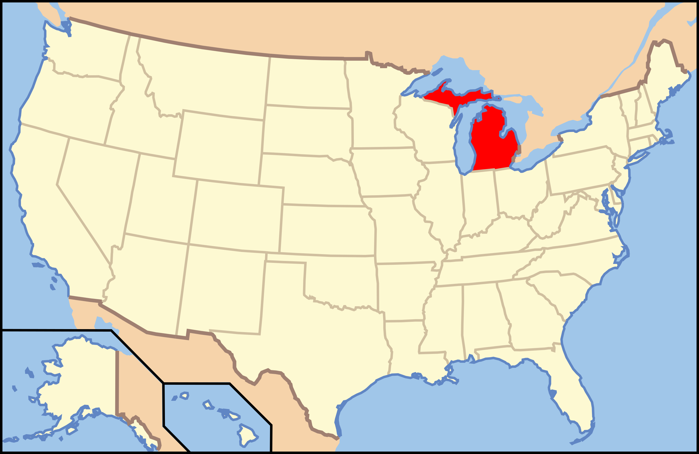

Michigan

1. Porcupine Mountains Escarpment - Porcupine Mountains Wildnerness State Park

Bryce Clark/Alltrails
| Grade: Long |
|---|
| More Images |
| Trail Link |
2. Canyon Gorge Trail - L'Anse

Kirsten J Holstege/Google Reviews
| Grade: Moderate |
|---|
| More Images |
| Trail Link |
3. Tahquamenon Falls - Tahquamenon Falls State Park

Venita S/Google Reviews
| Grade: Short |
|---|
| More Images |
| Trail Link |
4. Highbanks Trail - Huron National Forest

Kamal Chhoker/Google Reviews
| Grade: Very Long |
|---|
| More Images |
| Trail Link |